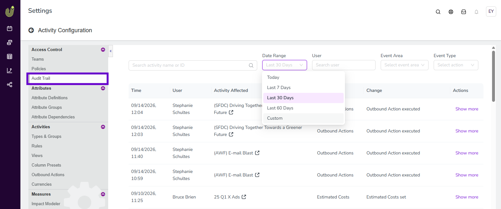
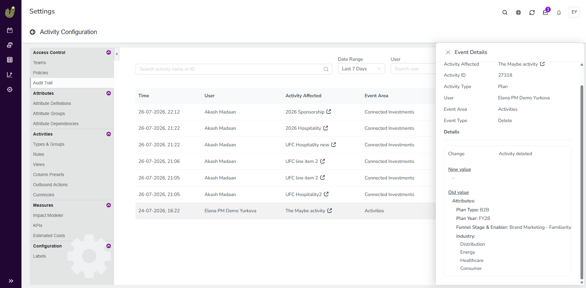
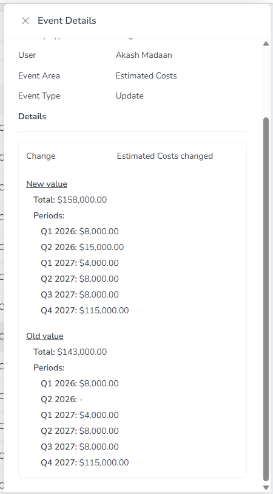

View a centralized audit trail for activities
The audit trail gives you one central place to see a record of every change made to any activity, showing who made it and when.
Open the audit trail
In Uptempo, go to Settings > Activity Configuration.
In the Access Control section of the sidebar, click Audit Trail.
The Audit Trail page opens, displaying a table of all recorded entries.


The table displays these columns:
Column | Description |
|---|---|
Time | The date and time the entry was recorded. |
User | The name of the user associated with the entry. |
Activity Affected | The name of the activity the entry relates to. Click the activity name to open it. |
Event Area | The area of the activity that the entry relates to, such as Activities, Estimated Costs, or Connected Investments. |
Change | A short description of the change, including the type of action, such as Create, Update, or Delete. |
Actions | Click Show more to view the full details for that entry. |
Filter and search the audit trail
To find specific entries, use the search field and filters above the table. By default, the table shows entries from Today.
Filter name | Description |
|---|---|
Search activity name or ID | Only show entries for a specific activity, matched by name or ID |
Date Range | Only show entries recorded within a specific date range. Choose Today, Last 7 Days, Last 30 Days, Last 60 Days, or Custom to specify your own date range. |
User | Only show entries associated with a specific user |
Event Area | Only show entries related to a specific area of an activity |
Event Type | Only show entries of a specific type, such as Create, Update, or Delete. Select Custom to show entries for Outbound Actions. |
View event details
To see the full details of an entry, click Show more on its row. The Event Details panel opens, showing information about the activity and the entry, followed by a comparison of the New value and Old value for the change.
What appears under New value and Old value depends on the type of entry:
For a newly created activity, all the data entered on the Details tab during creation appears under New value, and Old value is empty. Data entered on other tabs, such as Estimated Costs, Connected funds, or KPIs, is recorded as a separate entry for each area.
For an updated activity, a separate entry is recorded for each area that was changed, such as Estimated Costs. The panel shows the New value and Old value for that area.
For a deleted activity, all the data most recently entered on the Details tab appears under Old value, and New value is empty. Data from other tabs is recorded as separate entries under their respective areas.




Outbound Actions and changes to an activity's connected funding sources also appear as their own entries in the audit trail.